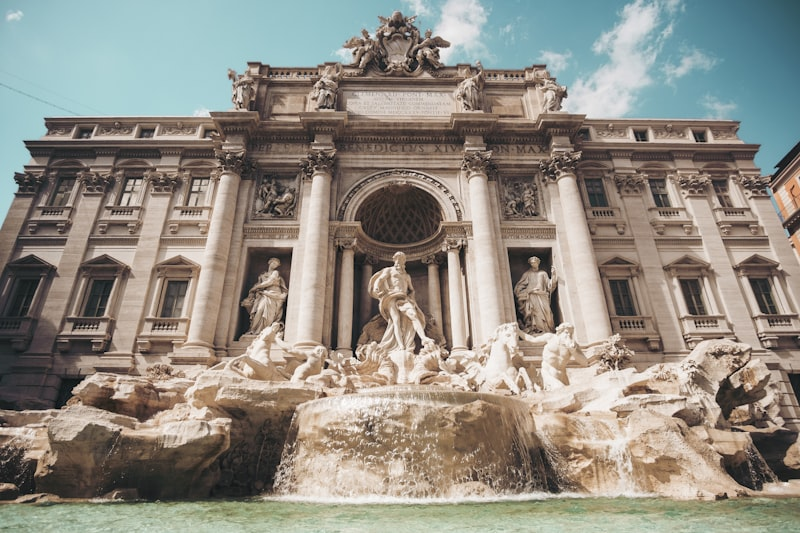
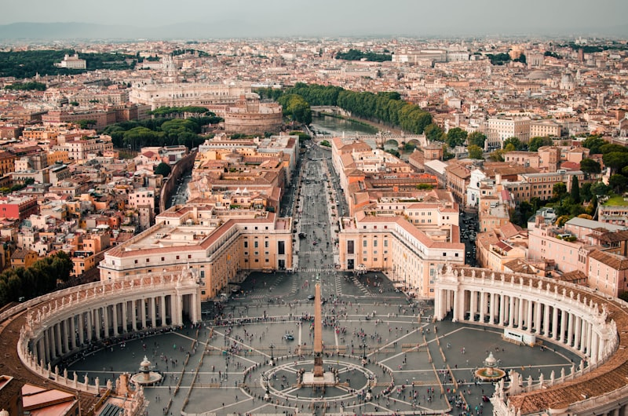
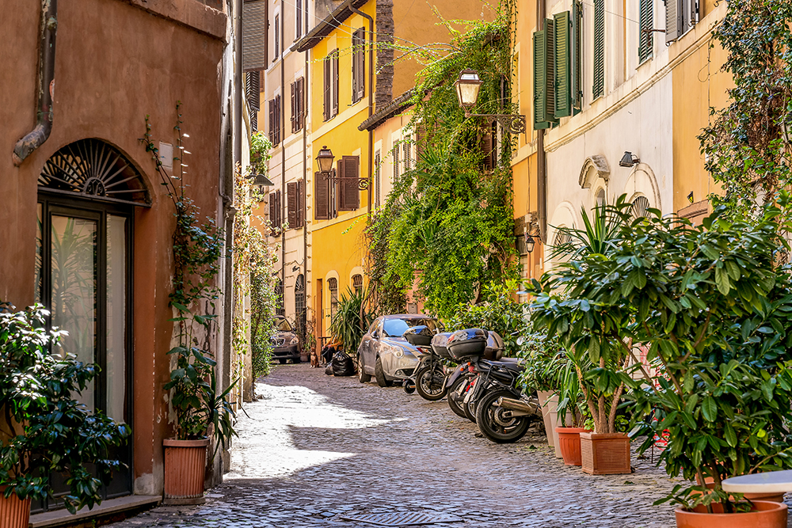
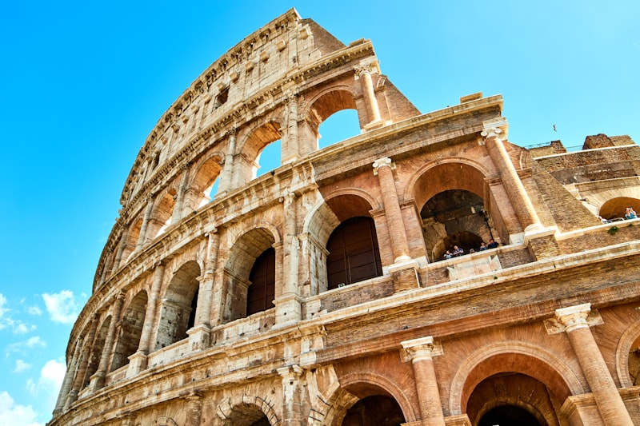
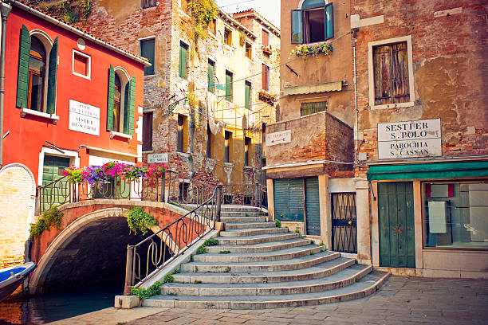

— Галерия —
Рим през моите очи
Колекция от моменти, които ме карат да искам да се върна отново и отново.






„Рим не е град като всеки друг. Това е голям музей, в който живееш."
— Алберто Сорди